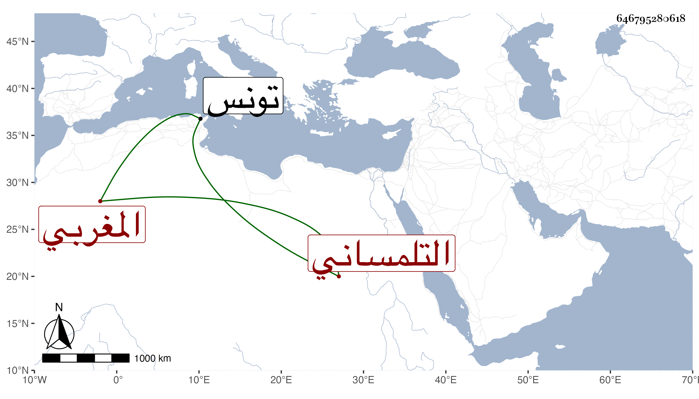

0902Sakhawi.DawLamic.ITO20230111-ara1.EIS1600.646795280618
Biography ID: 646795280618
521
عيسى التلمساني المغربي الملقب هناك بالغندور عندنا بالزلباني . شيخ جاهل احتوى على ضعفاء العقول ممن يظهر اعتقاد المهملين كبرد بك وتمراز والأنصاري وامتحنوا به ثم امتحن هو في أيام الظاهر خشقدم ، وعاد لبلاده فمات بتونس سنة ثمان وستين تقريبا بعد أن أصيب في وجهه بآكلة ويرمى بالعظائم بل بالكبائر وبلغه أن أبا الفضل المشدالي تكلم فيه فتهدده فيما بينه وبينه برميه بما يقتضي لمعتقديه قتله فلم يشك أبو الفضل في قدرته على ذلك فكف عنه بل سافر .
